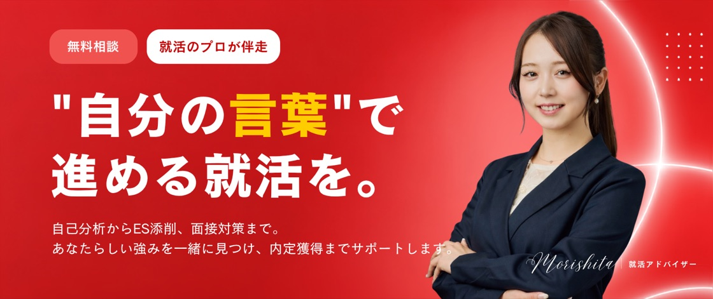

![★★★]()


※プレスリリース配信による掲載を含みます
CHECK
こんなお悩みありませんか？
そんなあなたにおすすめしたいのが
REFLAME
POINT
おすすめする3つの理由
POINT 01
一人では届かない解像度まで、
一緒に整理する
就活のプロが、自己分析と強みの言語化を一緒に進めます。企業を比べる軸と、ESや面接でそのまま使える「自分の言葉」が残ります。支援実績は4,200名以上です。
POINT 02
表に出ていない求人と、
選考ルートを持っている
一般には公開されていない求人や、選考ステップの短い特別選考ルートのご案内も可能です。年内までの残り時間から逆算してご提案します。
POINT 03
押し売りしない。
最後の判断まで付き合う
ご希望がない限り、求人のご紹介はいたしません。完全無料で、複数の内定の比較や最後の意思決定まで一緒に考えます。
USER VOICE
相談者の声
業界が決められなかった私が、3週間で大手3社から内定をもらえました！
就活すべきか迷っていましたが、自分の軸まで整理できて、内定3社もらえました。
ガクチカの見せ方が変わり、面接で自信を持って話せるようになりました。
ベンチャー or 大手で迷っていましたが、自分に合う企業選びが明確になりました。
※個人の感想であり、成果を保証するものではありません
FLOW
サポートの流れ
無料相談60分
いまの状況と、年内までに何をどの順でやるかを一緒に設計します。
求人のご提案希望者のみ
あなたの軸に合う企業をご提案。一般公開されていない求人を含みます。
選考対策
ES添削・面接練習を実施。企業ごとの選考ポイントを踏まえて対策します。
内定後のフォロー
複数内定の比較や意思決定も最後までサポート。内定がゴールではなく、納得できる選択まで伴走します。
FAQ
よくある質問
Q本当に無料ですか？▼
完全無料です。採用が決まった企業側から紹介料をいただく仕組みのため、就活生の方から費用をいただくことは一切ありません。
Qまだ何も始めていなくても大丈夫？▼
むしろ歓迎です。自己分析のやり方から一緒に始める方が多数です。「何から始めればいいか分からない」状態からで問題ありません。
Q他の就活サービスと併用できますか？▼
併用OKです。他社エージェントや就活サイトを使いながらのご相談も歓迎です。選考中の企業についてのご相談も可能です。
Q面談では何を話しますか？▼
いまの状況・悩みの整理と、就活の進め方の設計が中心です。無理な勧誘は一切ありません。
Q地方在住・オンラインでも利用できますか？▼
オンライン完結なので全国どこからでもご利用いただけます。スマホ1つでご参加可能です。
Q求人は必ず紹介されますか？▼
ご希望がない限り、求人のご紹介はいたしません。キャリア相談だけの利用も歓迎です。
年内に決めきる準備、
今日から始めませんか？
完全無料・オンライン完結・無理な勧誘なし。
60分で、いまの状況から逆算した進め方を一緒に引きます。
※ご希望がない限り、求人のご紹介はいたしません